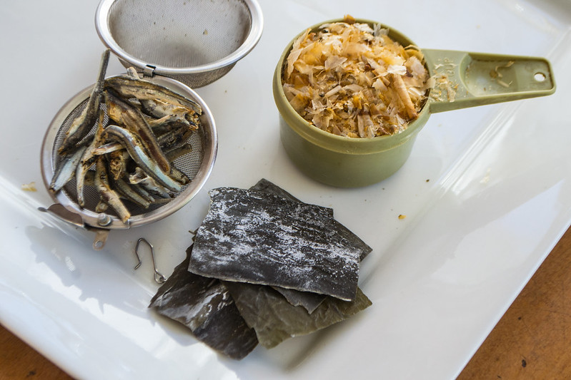

Home
Dashi

Description
Dashi is a traditional Japanese soup stock that serves as the foundation for many iconic dishes, including
miso soup, noodle broths,
and simmered dishes. Known for its delicate yet rich umami flavor, dashi is typically made with simple,
high-quality ingredients:
kombu (dried kelp), katsuobushi (dried bonito flakes), or shiitake mushrooms. The result is a light, clear
broth with a savory depth
that enhances the flavors of any dish it accompanies.
Ingredients
-
1 piece kombu (about 10cm x 10cm or 4 inches square)
-
4 cups (1 liter) water
-
1 cup loosely packed katsuobushi (dried bonito flakes)
Steps
-
Prepare the Kombu:
-
Wipe the kombu gently with a damp cloth to remove any surface dust. Do not wash it under running
water, as this may remove its flavor-enhancing compounds.
-
Simmer the Kombu:
-
Place the kombu in a pot with the water.
-
Heat gently over medium heat, allowing the kombu to infuse the water slowly.
-
Just before the water starts to boil (when small bubbles appear), remove the kombu. Boiling
kombu can make the broth slightly bitter.
-
Add the Katsuobushi:
-
Bring the water to a boil, then turn off the heat.
-
Add the katsuobushi flakes to the pot. Let them steep for about 2-3 minutes, or until they sink
to the bottom.
-
Strain the Dashi:
-
Strain the broth through a fine-mesh sieve or cheesecloth to remove the katsuobushi flakes.
-
Use Immediately or Store:
-
Use the dashi as a base for soups, sauces, or simmered dishes.
-
Store any leftovers in the refrigerator for up to 2 days.